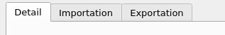

L'interface graphique
Les onglets de fonctionnalités

Les trois fonctionnalités de aito sont gérées dans des onglets :
-
l'onglet Détail
Il permet de naviger dans les acquisitions et les vecteurs, de
visualiser les informations de l'élément sélectionné et d'interagir avec
les données d'un vecteur sélectionné.
-
l'onglet Importation
Il permet d'importer des données sous AIDA grâce à mtv.py.
-
l'onglet Exportation
Il permet d'exporter des données AIDA au format NetCDF grâce à prod_CDF.py.